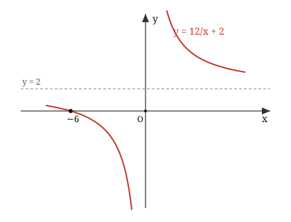

Based on Cambridge IGCSE Mathematics Core and Extended Coursebook, 3rd edition (Karen Morrison and Nick Hamshaw), Chapter 18 Curved graphs, printed pp.596–601 (reciprocal graphs \(y=\frac{a}{x}\), Worked example 8 style, sketching \(y=\frac{a}{x}+q\), and the investigation on p.601). Printed pages were read from rendered scans, including part_058 of the coursebook scan, which covers printed pp.592–603 (so p.601 is present). Own wording and new numbers.
Key words: reciprocal graph, hyperbola, asymptote, branch
A reciprocal graph of the form \(y=\dfrac{a}{x}\) (with \(a\neq 0\)) is a hyperbola. It has two branches, which are mirror images of one another.
To draw \(y=\dfrac{a}{x}\) accurately, make a table with at least five negative and five positive \(x\)-values (never \(x=0\)). Plot the points and join each branch with a smooth curve, approaching the axes but not meeting them.
Book: Worked example 8 style, printed pp.597–598 (\(xy=-12\)).
Find the value of \(y=-\dfrac{12}{x}\) when \(x=4\) and when \(x=-3\).
Answer: \(y=-3\) when \(x=4\); \(y=4\) when \(x=-3\).
When the equation is in the form \(y=\dfrac{a}{x}+q\) with \(x\neq 0\), you can sketch from these features (printed p.599).

Book: sketching \(y=\frac{a}{x}+q\), printed p.599.
For \(y=\dfrac{12}{x}+2\), find the \(x\)-intercept and the equations of the asymptotes.
Answer: \(x\)-intercept \(-6\); asymptotes \(x=0\) and \(y=2\).
Book: \(xy=a\) on pp.596–598; Apply your skills (journey of 240 km) on printed p.601 uses the same idea.
Given that \(xy=24\), find \(y\) when \(x=6\).
Answer: \(4\)
The book also asks you to plot \(y=\dfrac{1}{x^2}\). This is not a hyperbola. The values of \(y\) are never negative; the graph lies above the \(x\)-axis, with the same asymptotes \(x=0\) and \(y=0\), but the two sides are not a pair of hyperbolic branches in opposite quadrants. Treat \(y=\dfrac{1}{x^2}\) as a different family.
Find the value of \(y=\dfrac{20}{x}\) when \(x=5\).
Answer: \(4\)
Find the value of \(y=-\dfrac{12}{x}\) when \(x=-3\).
Answer: \(4\)
Find the \(x\)-intercept of \(y=\dfrac{12}{x}+2\).
Answer: \(-6\)
The graph of \(y=\dfrac{a}{x}\) passes through \((8,-3)\). Find \(a\).
Answer: \(-24\)
Marks: M = method, A = accurate answer (depends on M), B = independent mark. Never substitute \(x=0\) into \(y=\frac{a}{x}\).